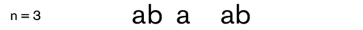
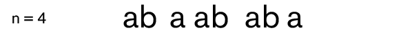

Composizione
Un L-system è essenzialmente un insieme di regole che descrivono come trasformare ricorsivamente, una stringa di simboli.
Una stringa, in questo contesto, è una serie di simboli, come “ğ‘†o “ğ‘ğ‘ğ‘ğ‘ğ‘ğ‘ğ‘ğ‘ğ‘ğ‘ğ‘â€, e può essere considerata come una parola composta da caratteri.
Ogni regola, nota come produzione, descrive la trasformazione di un simbolo in un altro simbolo, una serie di simboli o nessun simbolo affatto.
Ad ogni iterazione, le produzioni vengono applicate contemporaneamente a ciascun carattere, risultando in una nuova serie di simboli.
Elementi
Un L-system è composto da quattro elementi:
variabili,
costanti,
assioma e
regole.
Variabili: sono simboli che possono essere sostituiti con altre stringhe di simboli.
Costanti: simboli che non possono essere sostituiti.
Assioma: la stringa iniziale da cui inizia la derivazione – il punto di partenza.
Regole: le regole che descrivono come le variabili vengono trasformate durante ogni iterazione.
Ad esempio se volessimo creare un L-system dovremmo procedere in questo modo:
Variabili: a, b
Constanti: nessuna
Assioma: a
Regole: a → ab
b → a
Ad esempio, partendo dall'assioma “a†e applicando le regole, otteniamo:
Iterazione 0: a (la stringa iniziale).
Iterazione 1: Applichiamo le regole, sostituendo a con ab.
Iterazione 2: Applichiamo nuovamente le regole, sostituendo a con ab e b con a.
Iterazione 3: Continuando a sostituire le variabili secondo le regole, otteniamo: abaab.

Iterazione 4: Ancora una volta, sostituendo le variabili, otteniamo: abaababa.
